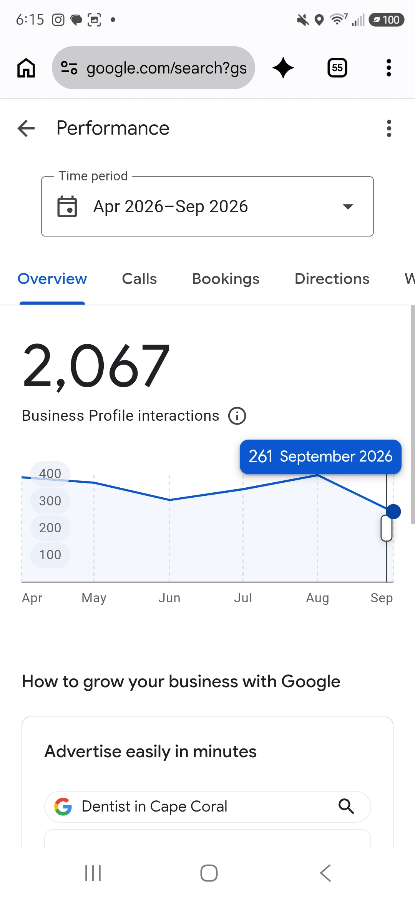
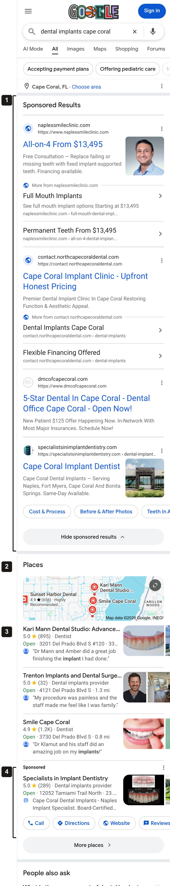
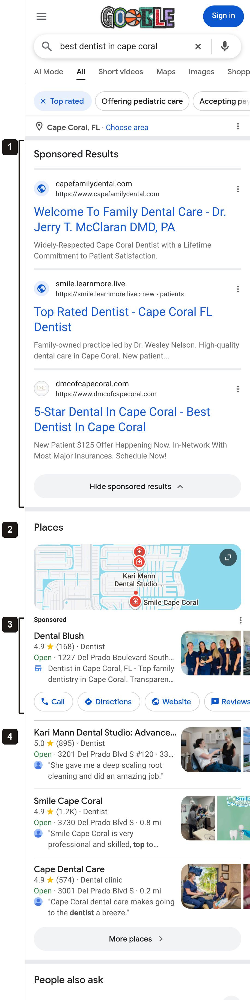
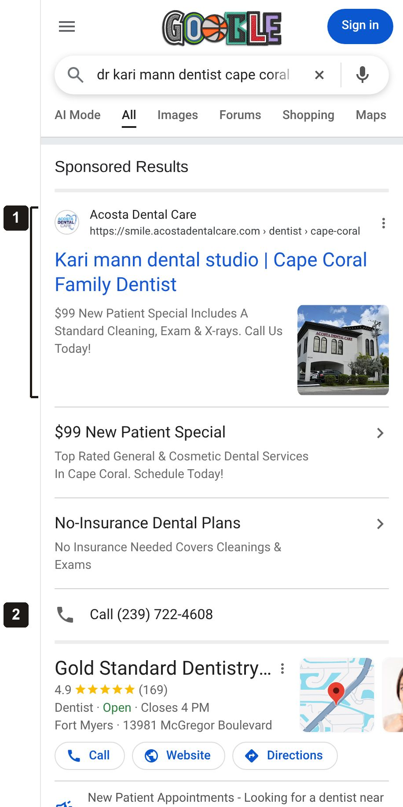
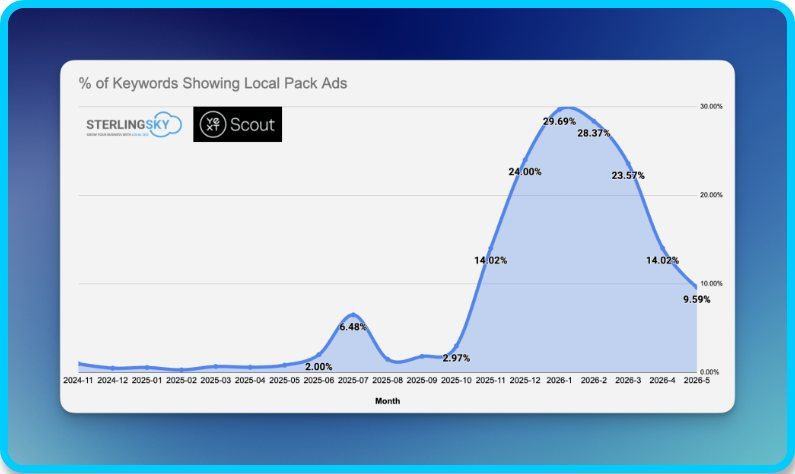
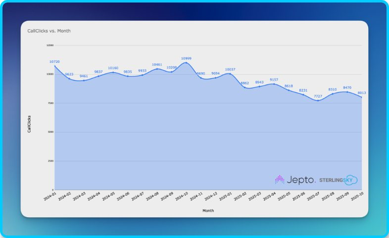
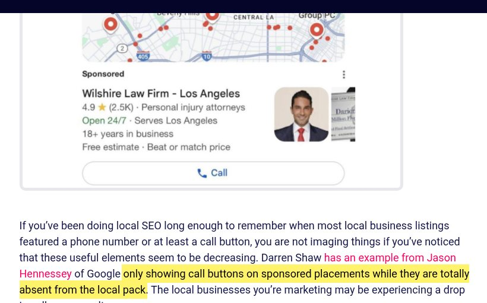
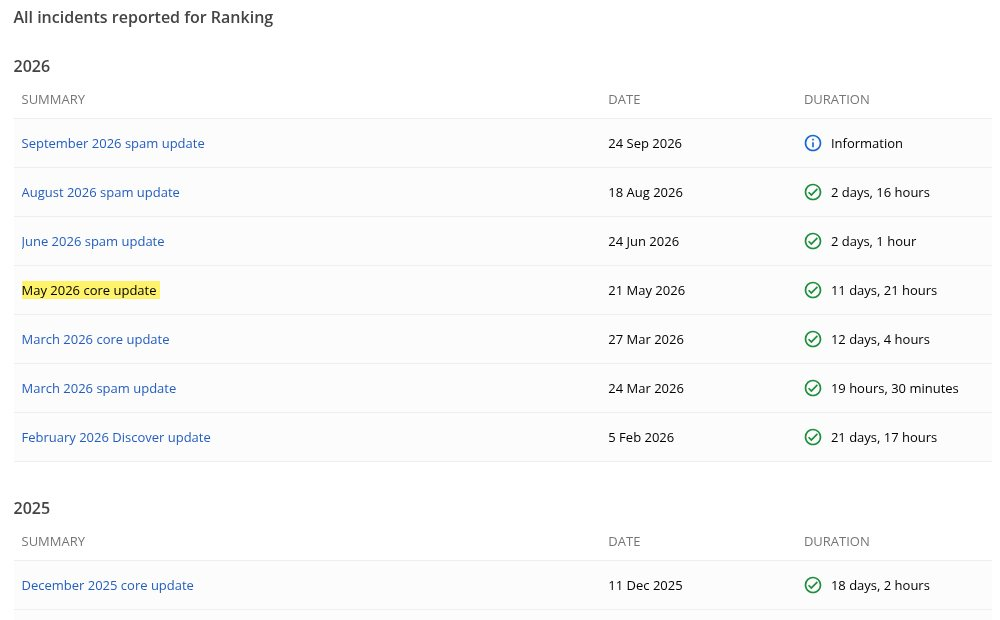
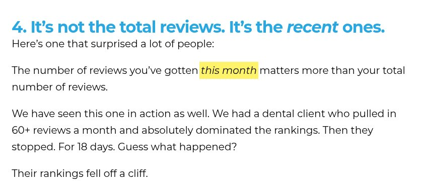

Kari Mann Dental StudioInternal note for Sophia · September 29, 2026
Kari Mann: how to read the Google profile numbers
Sophia, this is for you, not for the client. Kari sent the Performance screen from the practice's Google Business Profile showing 261 interactions for September, the lowest month on that chart, as one more sign the trend is heading the wrong way. Below is the full record from Google for that profile, what a Cape Coral searcher sees on Google today, what we control and what we don't, and how I would think about it before the call. It covers the Google profile only.
The decline in profile interactions is real, and it is worth watching. It did not start this month or with the new website: it began in November 2025, and most of it is one thing, the profile being shown less often in regular mobile Google search results. Calls held up longer than views did and have been lower since May, which is the part we cannot fully explain yet. Views of the listing on Google Maps itself are flat to slightly up over the same period, and the share of people who see the profile and then call, click or ask for directions is higher than it was a year ago. September is also not finished: Google's data for the month ends on the 25th, and at the current daily pace the month lands near 320, level with February and June. One part of this is specific to the practice: the profile is being shown far less often for implant searches than it was a year ago, while searches for a dentist in Cape Coral held steady. That is where the SEO work is going.
What Kari said, and what the full record shows
What Kari said
"Profile interactions are lower this month than they have been all year, even lower than the month we switched domains."
What the data shows
The 261 is real but incomplete. Google's Business Profile data runs several days behind and revises the most recent two to three weeks. When we pulled the profile through Google's API on September 29, the last full day of data was September 25. Through that date the month had 267 interactions, 10.7 a day, which puts the full month near 320. February had 319 and June had 305. September is on the low side, not at a new low.
The decline is older than the website. The chart on her screen starts in April. The full record below starts in April 2025. Interactions ran 430 to 555 a month through October 2025, stepped down in November 2025, and have run 305 to 467 since. The new website went live on May 29, 2026, six months after the step down. The month of the switch (June, 305) was the low point and the three months since have been higher: 344, 397, and September on pace for about 320.
Calls are the part to watch. Views and website clicks stepped down in November 2025. Calls did not: they held between 104 and 156 a month from April 2025 through April 2026, and have run 81 to 99 a month since May. September has 57 through the 25th, 2.3 a day against 3.2 in August, including one week (September 14 to 20) with six calls. May is the month Google's core update rolled out and the new site launched, and from launch until September 29 the profile's website link pointed at the old address. We cannot yet separate those three. The link is corrected, and the map scans at two and four weeks will show whether the rankings respond.
The screen Kari sent
Business Profile Performance, Apr to Sep 2026

1Six months are shown, so "lowest all year" means lowest of these six. April to September is also the off season in Cape Coral.
2September is plotted as if it were a full month next to five full months. Google does not mark it as partial.
The same profile, every month Google has on record
Interactions by type, April 2025 to September 2026. September is through the 25th, the last full day Google had reported when this was pulled.
The profile's history in Google's system starts in late March 2025, so April 2025 is the first full month available. Bookings and messages are zero throughout, so interactions are calls plus website clicks plus direction requests, the same three her Performance screen adds up. The step down happens between October and November 2025. The new site launched into the low point (June 2026) and the months since have been higher, not lower.Show the monthly numbers
Where the drop actually is: shown less, not ignored more
Google reports two different things for a profile. Impressions are how many times the profile was shown to someone, split by where it was shown: on Google Maps, or in a regular Google Search results page. Interactions are what people did after seeing it. Separating the two tells you whether the problem is visibility or the listing itself.
Times the profile was shown, by surface
Monthly impressions on Google Search versus Google Maps, April 2025 to September 2026 (September through the 25th)
Shown in Google Search resultsShown on Google Maps
Search impressions fell from 1,100 to 1,900 a month in 2025 to 490 to 800 a month in 2026, and mobile accounts for almost all of that loss (mobile impressions June to August: 3,569 in 2025, 1,799 in 2026). Maps impressions were 906 for June to August 2025 and 982 for the same months in 2026. The listing is being found on Maps as often as before. It is being shown less on the regular Google results page, and the next section shows why.Show impressions, interactions and the rate each month
The people who do see the profile act on it more than last year. Interactions per 100 impressions ran 24 to 37 through 2025 and 34 to 56 in 2026. A listing that was getting worse would show the opposite: the same number of views with fewer people acting. What we see is fewer views on one surface, with the listing converting better than it did.
What a Cape Coral searcher sees on Google today
The regular Google results page for a dental search looks different than it did a year ago. We ran the searches below on September 29, 2026 from a browser located in Cape Coral, on a phone and on a desktop, and captured the full page. Notes on each capture mark what sits above the map listings, how far down the page the map listings start, and whether the free map listings show a call button at all.
"dental implants cape coral"
Phone, September 29, 2026. Scroll inside the image to see the full capture.

1Four paid ads fill the first screen and a half. Two of the four are practices in Naples.
2The map results start here, about a screen and a half down the page.
3Kari Mann Dental Studio is the first map listing in this capture. There is no call button on it; a searcher has to tap into the listing to find the phone number.
4The paid listing inside the map results is the only one with Call, Directions and Website buttons.
"best dentist in cape coral"
Phone, September 29, 2026

1Three paid ads sit above the map results.
2The map results start just below the first screen.
3A paid listing is placed first inside the map results, and it carries the only Call button.
4Kari Mann Dental Studio is the first unpaid listing. No call button.
"dr kari mann dentist cape coral"
Phone, September 29, 2026, first screens

1The first result is another practice's paid ad, and it uses "Kari mann dental studio" as its own headline.
2That practice's phone number is offered before any result for Kari's practice appears.
A search for the exact practice name, "kari mann dental studio", showed no ads: the profile appeared first, with its Call, Directions and Website buttons. The ad is one for the Ads team to look at.
What the ten captures had in common. We captured five searches on a phone and the same five on a desktop. No unpaid map listing showed a call button on any of them. A paid listing sat inside the map results on nine of the ten, and paid ads sat above the map results on eight of the ten. The implant searches carried the most advertising: four advertisers, against none to three on the general dentist searches.
Where Call buttons do appear. Some searches show practice cards with Call, Website and Directions buttons near the top of the page. On the searches we captured, every one of those cards sat under the "Sponsored" label. On one search, "top dentist cape coral", Google also replaced the usual map results with an AI-written list of practices, and that list had no call buttons either.
How to read these. The browser's location was set at the office, which is the most favorable spot to search from, and a single search is a snapshot. These captures are here to show how the page is laid out, not to measure rank. Rank is measured by the 65-point map scan.
This is happening across local search, not just to this profile
Two independent research groups that track Google's local results across thousands of searches have documented the same pattern. The passages below are highlighted on the source pages so they can be checked.
Paid listings inside the map results
Sterling Sky, "The State of Local SEO in 2026", June 26, 2026

"Back at the beginning of 2025, local pack ads were only visible on 1% of the reports we were running on mobile devices. Fast forward to December 2025, and now almost 22% of our reports are showing them. This is a massive increase."sterlingsky.ca/the-state-of-local-seo-in-2026
Their tracked share was about 3 percent in October 2025, 14 percent in November and 30 percent in January 2026, then eased to under 10 percent by May. The profile's views on Google Search went from 1,419 in October 2025 to 1,080 in November and 490 in February 2026, and have been recovering since June. The two lines move together in time. That is not proof of cause, but it is the change on Google's side that matches the month the numbers moved.
Calls from profiles are falling even where rankings hold
Sterling Sky with Jepto, 179 profiles across 34 firms, January 2024 to October 2025

"If you have a business profile that ranks really well, even if you don't see a drop in ranking, your calls from the business profile are going down over time."sterlingsky.ca/the-state-of-local-seo-in-2026
Across the profiles in this study, calls fell from 10,720 a month to 8,013, about 25 percent, over 22 months. The study covers law firms, not dentists; the same article notes Google made the same change to dental results earlier.
Call buttons now appear on the paid listings only
Whitespark, "17 Local Developments You Need to Know About from Q4 2025"

"...Google only showing call buttons on sponsored placements while they are totally absent from the local pack. The local businesses you're marketing may be experiencing a drop in calls as a result."whitespark.ca/blog
This is what the Cape Coral captures above show: on all ten, the only Call button in the map results belonged to the paid listing.
Google's ranking updates in this period
Google Search Status Dashboard, ranking history

These are the dates marked on the charts above. The May 2026 core update began eight days before the new site launched. A spam update that began on September 24 was still rolling out when the search captures on this page were taken. Source: status.search.google.com.
The part that is specific to the practice: implant searches
Google also reports which searches caused the profile to be shown. Comparing January to August 2025 against January to August 2026, the general dentistry searches held and the implant and gum searches collapsed. Google shows counts under 15 only as "under 15".
Searches that showed the profile, January to August, 2025 versus 2026
Times the profile appeared for each search, from the Business Profile search terms report
Search
Jan to Aug 2025
Jan to Aug 2026
dentist cape coral
256
254
dentist
187
297
best dentist in cape coral
173
165
Practice name, all spellings combined
456
479
dental implants cape coral
244
32
dental implant cape coral
109
25
dental implants in cape coral
97
19
dental implants
75
under 15
periodontist cape coral
82
under 15
periodontics cape coral
41
none
dentist near me
113
under 15
Every search with the word "implant" or "periodont" in it fell by 75 to 95 percent, while searches for a dentist by name or by city held or grew. The profile's settings do not explain this: it carries the Dental implants provider and Dental implants periodontist categories and lists implant services, and none of that changed. Implant searches are also the most heavily advertised dental searches: in the captures above the practice was the first map listing for "dental implants cape coral", but that listing sat a screen and a half down the page, under four ads. This is the one finding in the profile data that is specific to the practice, and it lines up with the goal of more implant and All-on-X patients, so it is where we are concentrating: the services named on the profile, and the map scans for implant searches specifically.
What we found and fixed on the profile
We went through the profile's settings looking for anything that could be holding the listing back. It is well built: nine categories including Dental implants provider, 22 listed services, complete hours, and a 5.0 rating across 895 reviews. One item was ours to fix and is fixed: the website link. I would raise it with Kari ourselves instead of waiting for her to find it.
Done
Profile website link corrected. After the site launch the profile still linked to the old address (without "www"), which only reached the new site through a redirect. It now links directly to the new site, with a tag that lets us count visits from the profile separately from other Google visits.Sep 29
Profile services link corrected. Same fix on the services link.Sep 29
Business Profile listings reviewed and new photos added.September
Next
All-on-X, implant-supported dentures, TeethXpress and gum grafting added to the profile's services. The profile already lists 22 services, including dental implants, full mouth dental implants and periodontics. These four are the implant and gum treatments it does not yet name.
Map scan re-run at two and four weeks after the link fix, on the same 65-point grid as the September review, so the effect is measured rather than assumed.
Full September profile numbers reported once Google finalizes the month, mid-October.
How I would think about it
Two different things are being called "the decline", and they need to stay separate. The first is how often the profile is shown on the regular Google results page. That fell in November 2025, it is happening across local search, and we can show why. The second is calls from the profile, which held until April and have been lower since May. We can describe that one accurately, but we cannot yet say what caused it. If the two get blended on the call, the part we can explain ends up sounding like an excuse for the part we can't.
The profile is one door into the practice, not the whole building. Kari's own scoreboard is points of contact: the phone rings, or someone requests an appointment. Profile interactions are one source feeding that number. They are worth watching, but a change in this one source is not the same thing as a change in her total. Her tracking sheet is the right scoreboard, and this is one line on it.
Every Call button on the results page belongs to someone who is paying. In all of our captures the only Call buttons were on paid placements, and the practice was not in any of them. The free map listing still shows the practice, its rating and a review, but a searcher has to tap into it to call. That is Google's layout, for every dentist in Cape Coral. Whether the practice should be in those paid spots is a question for the Ads side, not something the profile can solve.
Where it matters to her goal, the practice ranks well. For "dental implants cape coral" the practice was first in the map results from the office, second on a desktop, and second on a separate phone check. The challenge on implant searches is what Google places above the map results, which is four advertisers.
What we control and what we don't. We control how complete and accurate the profile is, where it links, which services it names, and the ranking work measured by the map scan. The practice controls the flow of new reviews. Nobody but Google controls the page layout, the ads above the map results, or the missing call buttons.
What we do not know yet. Why calls stepped down in May. And whether rankings for the general searches moved this week: in two of today's single searches ("dentist cape coral" and "dentist near me") the practice did not appear in the map results, which does not match the September scan. Google is in the middle of a spam update that began September 24, and the profile's link changed the same day we searched, so single searches are especially unreliable right now. The map scan will answer it.
On the call: what I would say, and what I would avoid
Say
September is not finished. Google's data ends on the 25th. At this pace the month lands near 320, level with February and June. We will bring the full month in mid-October.
The drop in views started in November 2025, before we began and before the new site, and it matches the month paid listings started appearing inside the map results.
People who see the profile act on it more than they did last year. The listing itself is not the weak point.
The practice shows at the top of the map results for implant searches. What sits above them is paid.
Calls from the profile have been lower since May. We are measuring that, not guessing at it.
We found the profile's website link pointing at the old address and corrected it on September 29. We will re-run the map scan at two and four weeks to see the effect.
Avoid
"Rankings are holding." Not until the new scan is back.
Arguing that her 261 is wrong. It is real. It is partial, and it is one source.
Promising a ranking, a date, or a number of calls.
Blaming the site launch, or clearing it. May had three things happen at once and we cannot separate them yet.
Using any single search as proof, hers or ours, in either direction.
"We will optimize the profile." It is already built out. Say specifically what is being added.
The one part that sits with the practice: reviews
Google weighs recent reviews far more than the lifetime total. The practice has 895 reviews at 5.0 and a steady flow, which is worth protecting. Written reviews that mention the treatment and the area the patient came from, with a reply to each, are the ones Google shows under the listing. The implant capture above shows Google doing exactly that with one of theirs.
Recent reviews count for more than the total
Sterling Sky, study of 8,186 businesses in 200 cities, November 5, 2025

"The number of reviews you've gotten this month matters more than your total number of reviews. We have seen this one in action as well. We had a dental client who pulled in 60+ reviews a month and absolutely dominated the rankings. Then they stopped. For 18 days. Guess what happened? Their rankings fell off a cliff."sterlingsky.ca/what-gets-you-ranking-for-near-me-2025
How this was measured
Business Profile numbers: Google Business Profile Performance API, location 837371878889904501, daily metrics April 1, 2025 to September 26, 2026, pulled September 29, 2026. Monthly totals for April to August 2026 match the Performance screen Kari sent (390, 370, 305, 344, 397). Search terms from the same API's search keywords report, January to August of each year.
Search result captures: taken September 29, 2026 through a browser located in Cape Coral, Florida, on a phone-sized and a desktop-sized screen. The location was set at the office. Google personalizes results, so another person's screen can differ in detail; the order of the sections is what these captures are meant to show.
Google ranking updates from Google's Search Status Dashboard: December 11 to 29, 2025; March 27 to April 8, 2026; May 21 to June 2, 2026.
Research cited: Sterling Sky (Joy Hawkins), "The State of Local SEO in 2026" and "What Actually Gets You Ranking for Near Me in 2025"; Whitespark, "17 Local Developments You Need to Know About from Q4 2025". Each passage quoted on this page was captured from the source page on September 29, 2026.